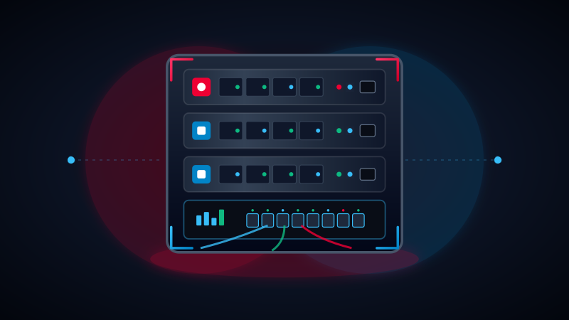
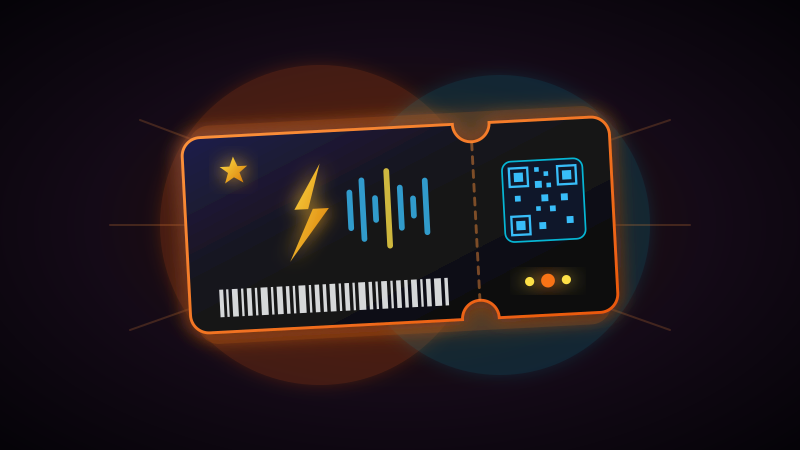
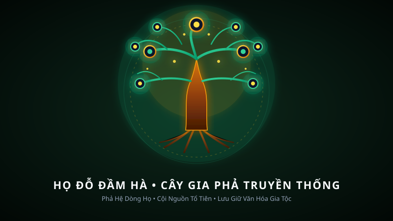
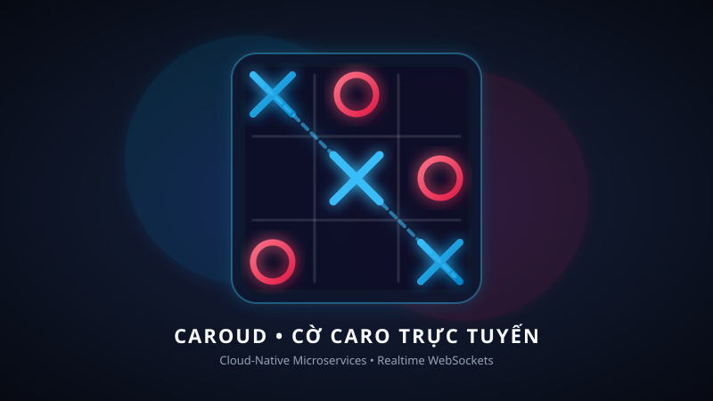
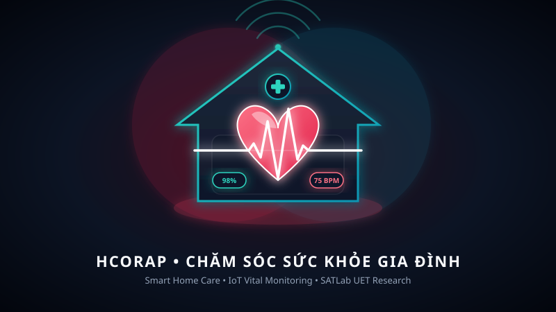
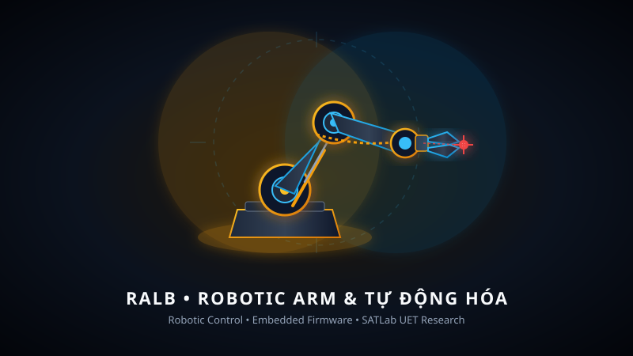

Kỹ sư Thực tập sinh tại Tổng công ty Mạng lưới Viettel (Viettel Networks) — Phòng Hạ tầng Cloud • Sinh viên chuyên ngành Mạng máy tính & Truyền thông dữ liệu tại VNU-UET • Nghiên cứu viên sinh viên tại SATLab • Chuyên sâu về hạ tầng OpenStack OVN, hệ thống mạng ảo hóa SDN, điện toán đám mây và tối ưu hóa giải thuật.
Kỹ sư trẻ đam mê hạ tầng viễn thông và đám mây quy mô lớn, luôn kiên trì học hỏi và kỷ luật trong công việc.
Tôi hiện là Kỹ sư Thực tập sinh Điện toán Đám mây tại Phòng Hạ tầng Cloud — Trung tâm Nền tảng Công nghệ và Chuyển đổi số, Tổng công ty Mạng lưới Viettel (Viettel Networks) trong khuôn khổ chương trình Viettel Digital Talent 2026. Tại đây, tôi tham gia nghiên cứu chuyên sâu về kiến trúc mạng ảo hóa OVN SDN, cơ chế cân bằng tải trong nhân Linux (Octavia OVN Provider) và xây dựng hệ sinh thái giám sát toàn diện cho hạ tầng đám mây OpenStack.
Song song với công việc tại Viettel Networks, tôi là sinh viên năm thứ 3 chuyên ngành Mạng máy tính và Truyền thông dữ liệu tại Trường Đại học Công nghệ, ĐHQGHN (VNU-UET) (GPA: 3.51 / 4.0) và là Nghiên cứu viên sinh viên tại SATLab, giải quyết các bài toán tối ưu hóa tổ hợp bằng kỹ thuật SAT Solvers.
Gắn bó sâu sắc với hai miền đất: Quê hương gốc gác tại Nam Định, sinh ra và lớn lên tại vùng đất mỏ TP. Hạ Long, Quảng Ninh. Sự gắn bó với văn hóa, con người của cả hai vùng đất đã rèn đúc cho tôi tác phong kỷ luật, sự kiên định, lòng biết ơn cội nguồn (được thể hiện qua dự án số hóa phả hệ Họ Đỗ Đàm An) và tinh thần không ngừng học hỏi.
Tôi hướng tới mục tiêu trở thành một Cloud Infrastructure Engineer / Site Reliability Engineer (SRE) xuất sắc, có khả năng thiết kế và vận hành các hạ tầng phân tán quy mô lớn, tính sẵn sàng cao và an toàn bảo mật.
Sự kết hợp giữa kiến thức hạ tầng viễn thông, mạng ảo hóa SDN, điện toán đám mây và kỹ thuật phần mềm hiệu năng cao.
Hành trình thực tập tại Viettel Networks, nghiên cứu khoa học tại SATLab và nền tảng học thuật vững chắc tại VNU-UET.
Tham gia quản trị và nghiên cứu giải pháp trên hạ tầng Private Cloud / OpenStack quy mô hàng nghìn nút mạng phục vụ mạng viễn thông 4G/5G Viettel. Trực tiếp nghiên cứu và phát triển đề tài: "Giải pháp giám sát hạ tầng mạng OVN và dịch vụ Load Balancer của OpenStack". Tự lập trình mô-đun ovn-octavia-lb-exporter (Python 3) kết nối OVSDB JSON-RPC, giám sát Linux Conntrack, tích hợp kho chuỗi thời gian VictoriaMetrics, cảnh báo tức thời Telegram NOC < 8s và Dashboard Grafana.
Mã nguồn đề tài LB-OVN Viettel Networks →Cải tiến giải thuật lập lịch và điều phối tài nguyên chăm sóc y tế tại nhà. Mô hình hóa bài toán thành công thức SAT, áp dụng các ràng buộc phá vỡ tính đối xứng (symmetry-breaking constraints) và kỹ thuật giải SAT gia tăng (incremental SAT solving) nhằm thu hẹp 68% không gian tìm kiếm.
Xem mã nguồn HCORAP →Đề xuất mô hình tối ưu hóa cân bằng dây chuyền lắp ráp bằng cánh tay robot dựa trên bộ giải SAT, tối ưu hóa phân bổ công đoạn sản xuất và giảm thiểu độ trễ chu kỳ sản xuất công nghiệp.
Xem mã nguồn RALB →Điểm trung bình tích lũy (GPA): 3.51 / 4.0 • Nghiên cứu viên tại phòng thí nghiệm SATLab • Đạt Học bổng Khuyến khích học tập VNU-UET các năm 2024, 2025. Tích cực tham gia các dự án môn học về Hệ thống phân tán, Mạng máy tính và Kiến trúc Đám mây.
Đạt Giải Ba Học sinh Giỏi cấp Tỉnh môn Vật Lý • Chủ tịch CLB Xando Model United Nations (XMUN 2021-2022), xây dựng tư duy lãnh đạo, phản biện sắc bén và khả năng ngoại giao đàm phán.
Các giải pháp hạ tầng đám mây viễn thông, hệ thống tải cao, ứng dụng phả hệ và đề tài nghiên cứu khoa học.

Giải pháp giám sát chuyên sâu hạ tầng mạng OVN SDN và Octavia Load Balancer. Viết Custom Exporter (Python 3), kết nối OVSDB JSON-RPC, theo dõi conntrack, tích hợp VictoriaMetrics và cảnh báo Telegram NOC < 8s.
Tự động hóa 100% bằng Ansible cụm OpenStack + Ceph RBD, mạng OVN DVR Geneve. Cung cấp Web Portal (Flask) tự phục vụ cấp phát máy chủ game (Minecraft) tức thời với Cloud-init.

Hệ thống bán vé tải cao cho kịch bản Flash Sale. Dùng Redis Virtual Queue điều phối hàng chờ, PostgreSQL Pessimistic Lock (SELECT FOR UPDATE) chống bán trùng vé và WebSockets sơ đồ ghế.

Số hóa tộc phả 9+ đời tương tác bằng React Flow và Dagre.js. Tích hợp lịch Âm - Dương song song, Bức tường ký ức, quản lý quỹ họ trên nền tảng TanStack Start (React 19) và Drizzle ORM.

Game Caro trên nền tảng đám mây AWS với kiến trúc Microservices chịu tải cao. Quản lý nhóm 4 thành viên, giám sát toàn bộ vòng đời SDLC trong môn học UET Cloud Computing.

Khung giải thuật tối ưu hóa phân bổ tài nguyên y tế tại nhà dựa trên SAT. Áp dụng symmetry-breaking constraints và incremental SAT solving để thu hẹp không gian tìm kiếm.

Phương pháp tối ưu hóa cân bằng dây chuyền lắp ráp bằng robot ứng dụng mô hình mệnh đề logic SAT, nâng cao năng suất và giải quyết các xung đột công đoạn.
Tự phát triển hoàn toàn từ đầu trò chơi thủ thành 2D sử dụng C++ và thư viện đồ họa SDL2. Tối ưu hóa quản lý bộ nhớ, vòng lặp game loop và thuật toán tìm đường của quái.
Những dấu mốc ghi nhận nỗ lực học thuật và phát triển năng lực công nghệ.
Chương trình ươm mầm tài năng công nghệ số của Tập đoàn Viettel (Cloud Track) • Kỹ sư Thực tập tại Viettel Networks.
Trường Đại học Công nghệ, ĐHQGHN (VNU-UET) dành cho sinh viên có thành tích học tập và rèn luyện xuất sắc.
Chứng chỉ hoàn thành chương trình đào tạo điện toán đám mây chính quy từ AWS Academy.
Khóa đào tạo chuyên sâu về Internet of Things (IoT) và giải pháp phần cứng - mạng thông minh.
Chứng chỉ đánh giá kỹ năng Problem Solving, Java, và SQL (Basic) từ nền tảng lập trình HackerRank.
Kỳ thi Chọn Học sinh Giỏi cấp Tỉnh Quảng Ninh • Cựu Chủ tịch CLB XMUN (2021-2022).
Tôi luôn sẵn sàng trao đổi về kỹ thuật mạng đám mây, cơ hội việc làm và các đề tài nghiên cứu công nghệ.
Đừng ngần ngại liên hệ qua email hoặc số điện thoại. Tôi sẽ phản hồi sớm nhất có thể!